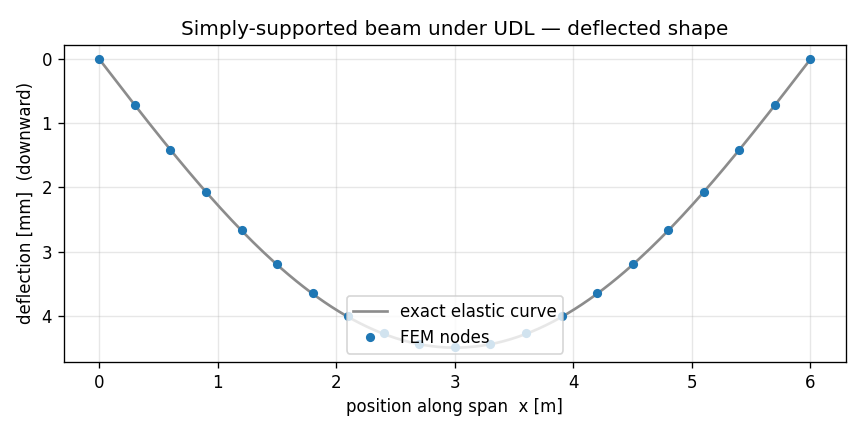

A simply-supported beam, the apeGmsh way¶
In the first tutorial you applied a single point load by hand — one node, one force vector. Real structures rarely load that politely. A floor beam carries a distributed load: a uniform pressure smeared along its whole length. This tutorial builds that case — a simply-supported beam under a uniform distributed load — and in doing so introduces the apeGmsh habit that makes distributed loading painless: you describe the load once, by name, and let the library do the tributary bookkeeping.
No manual np.diff over edge lengths. No hand-summed half-segments at shared
nodes. You say "this much force per metre, along this span", and apeGmsh
resolves it into the right nodal forces and carries them all the way to the
solver.
We keep the same trust-but-verify spine as before: a closed-form answer stated up front, the whole script shown once, then a block-by-block walk, and the real printed numbers at the end.
Prerequisite
This page assumes you've done Your first model — the
session → physical groups → typed bridge → Results loop. We move a little
faster through the parts that repeat.
The problem¶
w = 12 kN/m (uniform, downward)
↓ ↓ ↓ ↓ ↓ ↓ ↓ ↓ ↓ ↓ ↓
────────────────────────────────────────────────
△ ○
pin roller
|<------------------ L = 6 m ------------------>|
Section: 0.10 m × 0.30 m rectangle (strong-axis bending)
Material: steel, E = 200 GPa
A pin at one end, a roller at the other: the textbook simply-supported beam. Three numbers fall straight out of statics and beam theory, and you can write all three without solving anything:
$$ \delta_{\text{mid}} = \frac{5\,w\,L^{4}}{384\,E\,I} \qquad M_{\text{mid}} = \frac{w\,L^{2}}{8} \qquad R_{A} = R_{B} = \frac{w\,L}{2} $$
With $w = 12{,}000\ \text{N/m}$, $L = 6\ \text{m}$, $E = 200\times10^{9}\ \text{Pa}$, and $I = \tfrac{b h^{3}}{12} = \tfrac{0.10 \cdot 0.30^{3}}{12} = 2.25\times10^{-4}\ \text{m}^4$:
$$ \delta_{\text{mid}} = \frac{5 \cdot 12{,}000 \cdot 6^{4}}{384 \cdot 200\times10^{9} \cdot 2.25\times10^{-4}} = 4.50\ \text{mm} \qquad M_{\text{mid}} = \frac{12{,}000 \cdot 6^{2}}{8} = 54\ \text{kN·m} \qquad R = \frac{12{,}000 \cdot 6}{2} = 36\ \text{kN} $$
Keep 4.50 mm, 54 kN·m, and 36 kN in your back pocket. Those are the three numbers apeGmsh has to reproduce.
Units
Consistent SI throughout: metres, newtons, pascals. A distributed load is therefore newtons per metre (N/m). Deflections come out in metres; we print millimetres for readability.
The whole model¶
Here is the entire script. Read it top to bottom first — the new idea is the
g.loads block in the middle, and it's only two lines.
from apeGmsh import apeGmsh, Results
from apeGmsh.opensees import apeSees, OpenSeesModel
from apeGmsh.results.capture.spec import DomainCaptureSpec
import numpy as np
# --- Problem data (consistent SI: m, N, Pa) ---
L = 6.0 # span [m]
E = 200e9 # Young's mod. [Pa] (steel)
b, h = 0.10, 0.30 # section sides [m]
A = b * h # area [m^2]
Iz = b * h**3 / 12.0 # strong-axis I [m^4]
w = 12_000.0 # distributed load [N/m] (downward, -y)
# --- 1. Geometry + physical groups, inside a session ---
with apeGmsh(model_name="ssbeam") as g:
p0 = g.model.geometry.add_point(0.0, 0.0, 0.0)
p1 = g.model.geometry.add_point(L, 0.0, 0.0)
beam = g.model.geometry.add_line(p0, p1)
g.model.sync()
g.physical.add(1, [beam], name="Span") # the curve -> beam elements
g.physical.add(0, [p0], name="Pin") # left end -> pin support
g.physical.add(0, [p1], name="Roller") # right end -> roller support
g.mesh.sizing.set_global_size(L / 20.0) # ~20 elements (even -> node at mid)
g.mesh.generation.generate(1)
# --- DESCRIBE-ONCE: declare the distributed load by NAME ---
with g.loads.case("udl"):
g.loads.line("Span", magnitude=w, direction=(0.0, -1.0, 0.0))
fem = g.mesh.queries.get_fem_data(dim=1) # resolves the load into nodal forces
# Peek at what apeGmsh resolved (optional — purely for insight here).
nodal_loads = list(fem.nodes.loads)
total_fy = sum((r.force_xyz[1] if r.force_xyz else 0.0) for r in nodal_loads)
print(f"resolved nodal-load records : {len(nodal_loads)}")
print(f"sum of nodal Fy : {total_fy:.1f} N (should be -wL = {-w*L:.1f})")
# midspan node id (the node nearest x = L/2)
ids, coords = fem.nodes.ids, fem.nodes.coords
mid_nid = int(ids[int(np.argmin(np.abs(coords[:, 0] - L / 2.0)))])
# --- 2. Build the OpenSees model through the typed bridge ---
ops = apeSees(fem)
ops.model(ndm=2, ndf=3) # 2-D frame: ux, uy, thetaz
transf = ops.geomTransf.Linear(vecxz=(0.0, 0.0, 1.0))
ops.element.elasticBeamColumn(pg="Span", transf=transf, A=A, E=E, Iz=Iz)
ops.fix(pg="Pin", dofs=(1, 1, 0)) # pin: ux, uy fixed; rotation free
ops.fix(pg="Roller", dofs=(0, 1, 0)) # roller: uy fixed only
# A pattern + time series scales the load over the step. The distributed load
# was declared on g.loads under the "udl" case; import that case into the
# pattern with p.from_model(...) so it reaches the deck (loads are opt-in).
ts = ops.timeSeries.Linear()
with ops.pattern.Plain(series=ts) as p:
p.from_model("udl")
ops.constraints.Plain()
ops.numberer.Plain()
ops.system.BandGeneral()
ops.test.NormDispIncr(tol=1e-10, max_iter=10)
ops.algorithm.Linear()
ops.integrator.LoadControl(dlam=1.0)
ops.analysis.Static()
# --- 3. Solve, capturing midspan displacement + support reactions ---
spec = DomainCaptureSpec(opensees=ops)
spec.nodes(pg="Span", components=["displacement"])
spec.nodes(pg="Pin", components=["reaction_force_y"])
spec.nodes(pg="Roller", components=["reaction_force_y"])
with ops.domain_capture(spec, path="run.h5") as cap:
cap.begin_stage("udl", kind="static")
ops.analyze(steps=1)
cap.step(t=1.0)
cap.end_stage()
# --- 4. Read it back by physical-group NAME ---
results = Results.from_native("run.h5", model=OpenSeesModel.from_h5("run.h5"))
span_uy = results.nodes.get(pg="Span", component="displacement_y")
col = list(span_uy.node_ids).index(mid_nid)
delta_fem = abs(float(span_uy.values[-1, col]))
delta_exact = 5.0 * w * L**4 / (384.0 * E * Iz)
pin_ry = results.nodes.get(pg="Pin", component="reaction_force_y")
rol_ry = results.nodes.get(pg="Roller", component="reaction_force_y")
Rpin = float(np.sum(pin_ry.values[-1, :]))
Rrol = float(np.sum(rol_ry.values[-1, :]))
R_exact = w * L / 2.0
# Midspan moment, derived from the FEM-captured reaction by statics:
# M_mid = R*(L/2) - w*(L/2)*(L/4)
M_fem = Rpin * (L / 2.0) - w * (L / 2.0) * (L / 4.0)
M_exact = w * L**2 / 8.0
print(f"delta_FEM = {delta_fem*1e3:.4f} mm")
print(f"delta_exact = {delta_exact*1e3:.4f} mm (5wL^4/384EI)")
print(f"delta error = {abs(delta_fem-delta_exact)/delta_exact*100:.4f} %")
print(f"R_pin = {Rpin/1e3:.4f} kN")
print(f"R_roller = {Rrol/1e3:.4f} kN")
print(f"R_exact = {R_exact/1e3:.4f} kN (wL/2 each)")
print(f"M_mid_FEM = {M_fem/1e3:.4f} kN.m (from captured R)")
print(f"M_mid_exact = {M_exact/1e3:.4f} kN.m (wL^2/8)")
Run it. You should see:
resolved nodal-load records : 21
sum of nodal Fy : -72000.0 N (should be -wL = -72000.0)
delta_FEM = 4.4910 mm
delta_exact = 4.5000 mm (5wL^4/384EI)
delta error = 0.2000 %
R_pin = 36.0000 kN
R_roller = 36.0000 kN
R_exact = 36.0000 kN (wL/2 each)
M_mid_FEM = 54.0000 kN.m (from captured R)
M_mid_exact = 54.0000 kN.m (wL^2/8)
All three back-pocket numbers land. The reactions and the midspan moment are exact — they're pure statics, and apeGmsh's resolved nodal loads sum to exactly $wL$, so equilibrium is exact. The deflection is off by 0.2%, and that small gap is honest and worth understanding — we'll come back to it.
Here is the deflected shape (we'll plot it at the end), FEM nodes sitting on the textbook elastic curve:

Now let's see why each block does what it does — focusing on what's new.
Step 1 — Name the span and the two supports¶
g.physical.add(1, [beam], name="Span") # dim 1 = the curve -> beam elements
g.physical.add(0, [p0], name="Pin") # dim 0 = a point
g.physical.add(0, [p1], name="Roller")
Same move as the cantilever: three physical groups, three names. The only
difference is the supports. A cantilever had one fully-fixed end; here we have
two different supports, so they get two different names — "Pin" and
"Roller" — because we'll fix them differently in Step 2.
We choose L/20 as the target element size so the mesh has an even number
of elements. That puts a node exactly at $x = L/2$, which we'll need to read the
midspan deflection cleanly.
The describe-once load¶
This is the heart of the tutorial. g.loads is the loads composite — a
session-level place where you declare loads against named geometry, before
the mesh even exists in solver terms.
g.loads.case("udl")is a context manager that groups everything inside it under a named load pattern ("udl", for uniformly distributed load). Patterns let a downstream solver emit onetimeSeries/patternblock per group — dead load, live load, wind, each its own pattern.g.loads.line("Span", magnitude=w, direction=(0, -1, 0))declares a distributed load ofwnewtons per metre, pointing straight down, along every curve in the"Span"physical group. One line. By name.
You never compute a tributary length. You never touch a node. You state the physics — force per metre, this direction, this span — and stop.
Where the load actually goes: get_fem_data resolves it¶
get_fem_data is the snapshot, exactly as in the cantilever — but it's also the
rendezvous point where declared loads get resolved. When you call it,
apeGmsh walks each beam element under "Span", computes the length-weighted
share of the distributed load, and splits each element's share equally between
its two end nodes. The result is a set of nodal load records stored on
fem.nodes.loads — the tributary work, done for you.
That's why the script peeks at it:
nodal_loads = list(fem.nodes.loads)
total_fy = sum((r.force_xyz[1] if r.force_xyz else 0.0) for r in nodal_loads)
and prints:
21 records (one per node of the 20-element mesh), and they sum to exactly $-wL = -72{,}000\ \text{N}$ — the whole distributed load, conserved. Interior nodes carry $w \cdot \ell$ (one full element-length of load, half from each neighbour); the two end nodes carry $w \cdot \ell / 2$. You didn't write that arithmetic. The composite did.
This is the point of the composite
Without g.loads, applying a UDL means: list the elements, get each
length, halve it, accumulate at shared nodes, watch the sign convention,
and hope you didn't double-count an interior node. With g.loads.line(...)
it's one declaration and get_fem_data does the rest — and the
conservation check (sum == -wL) is your proof it's right.
Step 2 — Pin, roller, and a section¶
ops = apeSees(fem)
ops.model(ndm=2, ndf=3)
transf = ops.geomTransf.Linear(vecxz=(0.0, 0.0, 1.0))
ops.element.elasticBeamColumn(pg="Span", transf=transf, A=A, E=E, Iz=Iz)
Identical to the cantilever's bridge setup: a 2-D frame, a linear geometric
transform, and every element in "Span" written as a linear-elastic
beam-column. The transform comes back as a handle you pass by reference.
Section properties: inline now, ops.section later
Here we pass A, E, Iz straight into elasticBeamColumn — perfect for
an elastic prismatic beam. When you need a nonlinear fibre section
(concrete + rebar, steel yielding), you build it once with ops.section
(e.g. ops.section.Fiber(...)) and a beamIntegration, then hand the
section to a forceBeamColumn. Same describe-once spirit, one rung up in
fidelity — the fibre-section recipe lives in the OpenSees bridge how-to.
The supports are where pin and roller diverge:
ops.fix(pg="Pin", dofs=(1, 1, 0)) # ux, uy fixed; rotation free
ops.fix(pg="Roller", dofs=(0, 1, 0)) # uy fixed only
dofs is a length-ndf mask — 1 = fixed, 0 = free, in the order
$(u_x, u_y, \theta_z)$.
- Pin holds both translations but lets the end rotate — that's what makes it a pin and not a clamp.
- Roller holds only the vertical translation, leaving the beam free to slide horizontally and rotate.
Together they make the beam statically determinate, which is exactly why the reactions come out as clean $wL/2$ values.
The empty pattern, and an honest word about loads¶
In the cantilever you put a pat.load(...) inside this block. Here the
block imports the session-declared case instead: the distributed load was
declared on g.loads.line under the case "udl", and p.from_model("udl")
replays the resolved fem.nodes.loads as load lines inside this pattern. So
the nodal forces reach the solver without you re-typing them — but only because
you imported the case (loads are opt-in, ADR 0051).
What the bridge carries over — and the one subtlety
From the first tutorial you know the bridge auto-emits multi-point
constraints but asks you to re-declare fixities (ops.fix). Loads are
different again: they are opt-in. Anything you declared through
g.loads resolves into fem.nodes.loads and persists to model.h5, but it
reaches the deck only when a pattern imports its case with
p.from_model(case) — that's why this Plain block calls
p.from_model("udl") rather than sitting empty. The deck is
authoritative: a case you don't import is simply not applied.
The practical rule: a load reaches the deck through one explicit
channel — p.from_model(case) (import a g.loads case) or pat.load
(author on the bridge). The cantilever used pat.load because its point
load lived only on the bridge; this beam imports the g.loads case because
the distributed load is what the composite exists to handle. There is no
typed eleLoad beamUniform verb on the pattern — the distributed load
reaches the solver as the equivalent nodal forces the composite resolved.
The rest — constraints through analysis — is the standard linear-static
solver chain, unchanged from the cantilever.
Step 3 — Capture displacement and reactions¶
spec = DomainCaptureSpec(opensees=ops)
spec.nodes(pg="Span", components=["displacement"])
spec.nodes(pg="Pin", components=["reaction_force_y"])
spec.nodes(pg="Roller", components=["reaction_force_y"])
We want three things back, so we declare three capture records — all by name.
"displacement" on the whole span (we'll pick out the midspan node);
"reaction_force_y" on each support. Asking for a reaction component is enough
— apeGmsh calls ops.reactions() for you each step so the values are fresh.
The capture block itself is the same in-process pattern as before:
begin_stage → analyze → step → end_stage, writing run.h5.
Step 4 — Read the three checks back¶
span_uy = results.nodes.get(pg="Span", component="displacement_y")
col = list(span_uy.node_ids).index(mid_nid)
delta_fem = abs(float(span_uy.values[-1, col]))
results.nodes.get(pg="Span", component="displacement_y") returns a slab whose
columns are the span's nodes. We find the column for the midspan node id we
saved earlier and read its last-step deflection — 4.4910 mm.
Each support group is a single node, so summing its reaction column gives the support reaction directly — 36.0 kN at each end, exactly $wL/2$.
The midspan moment we get from statics on the FEM-captured reaction: take the left reaction's moment about midspan, subtract the moment of the load on the left half. With $R = 36\ \text{kN}$ that's $36 \cdot 3 - 12 \cdot 3 \cdot 1.5 = 54\ \text{kN·m}$ — exactly $wL^2/8$. Because the reaction came from the solve, this is a genuine FEM-derived check, not a restatement of the formula.
About that 0.2% on the deflection¶
The reactions and moment are exact; the deflection is off by 0.2%. Why?
The elastic beam-column element carries a cubic bending shape exactly — so for concentrated end loads (like the cantilever's tip load) it's the closed-form answer with zero error. But a distributed load is being represented here as equivalent nodal point loads (the tributary forces). Lumping a smooth UDL into a finite set of nodal pokes introduces a small discretization error in the deflected shape — and it shrinks as you refine the mesh:
| elements | midspan deflection error |
|---|---|
| 20 | 0.20 % |
| 60 | 0.022 % |
Nine times finer, ~nine times smaller error — textbook $O(h^2)$ convergence.
The 0.2% at 20 elements is not a bug; it's the honest cost of turning a
distributed load into nodal forces, and it's plenty accurate for design. (If you
ever need the exact distributed-load deflection on a coarse mesh,
g.loads.line(..., reduction="consistent") uses the shape-function-consistent
load vector instead of simple tributary lumping — it matters most for
higher-order elements.)
The deflected shape¶
The figure at the top of the page overlays the FEM deflection on the exact
elastic curve. Here's the code that draws it — we read the captured Span
slab and plot it node-by-node against the closed-form curve
$w(x) = \dfrac{w\,x}{24EI}\,(L^3 - 2Lx^2 + x^3)$:
import matplotlib
matplotlib.use("Agg") # headless backend
import matplotlib.pyplot as plt
uy = results.nodes.get(pg="Span", component="displacement_y")
xs = np.array([coords[list(ids).index(n)][0] for n in uy.node_ids])
order = np.argsort(xs)
w_fem = np.abs(uy.values[-1]) * 1e3 # mm, downward positive
xx = np.linspace(0.0, L, 200)
w_exact = w * xx * (L**3 - 2*L*xx**2 + xx**3) / (24.0 * E * Iz) * 1e3
fig, ax = plt.subplots(figsize=(7.2, 3.6))
ax.plot(xx, w_exact, "-", color="0.55", lw=1.6, label="exact elastic curve")
ax.plot(xs[order], w_fem[order], "o", ms=4.5, color="#1f77b4", label="FEM nodes")
ax.set_xlabel("position along span x [m]")
ax.set_ylabel("deflection [mm] (downward)")
ax.set_title("Simply-supported beam under UDL — deflected shape")
ax.legend(loc="lower center"); ax.grid(alpha=0.3); ax.invert_yaxis()
fig.tight_layout(); fig.savefig("ssbeam-deflection.png", dpi=120)
Every FEM node lands on the analytical curve — the 0.2 % we saw is in the midspan magnitude, not the shape.
See it¶
results.show_web() launches the notebook-safe web viewer — an interactive
deformed-shape view right in your Jupyter cell. (The static figure above is plain
matplotlib over the captured slab — the right tool in scripts and CI; show_web()
is the interactive one for notebooks.)
Don't call results.viewer() in a notebook
The desktop viewer (results.viewer(), default blocking=True) runs a
native VTK + Qt loop that crashes a Jupyter or VS Code kernel. In a
notebook, reach for results.show_web() instead.
A peek ahead — mass for a modal analysis¶
The same describe-once habit covers mass, which you'll need the moment you go
from static to dynamic. g.masses mirrors g.loads:
# Lumped mass from the beam's own weight, declared once by name:
g.masses.line("Span", mass_per_length=rho * A, density=rho)
Like loads, masses you declare on the session resolve into the snapshot
(fem.nodes.masses) and flow to the solver. With mass in place you'd swap the
static chain for an eigen solve (ops.eigen(...)) and read mode shapes back
through results.modes. That's a tutorial of its own — but the declaration
is the same one-liner you just learned.
What you just learned¶
g.loadsis describe-once. Declare a distributed load withg.loads.case(...)+g.loads.line(name, magnitude=, direction=)against a physical-group name. No tributary loop, no shared-node bookkeeping.get_fem_dataresolves it. The declared load becomes nodal forces onfem.nodes.loads— and they conserve exactly (sum == -wL).- Loads are opt-in on the bridge. A
g.loadscase reaches the solver only when a pattern imports it withp.from_model(case)(or you author it viapat.load). Nothing auto-emits and the deck is authoritative — a case you don't import is simply not applied. - Pin vs roller is a
dofsmask.(1,1,0)pins;(0,1,0)rolls — the difference between a fixed and a free DOF. - Three checks, three exact (or near-exact) hits. Reactions and moment are exact statics; the deflection carries a small, convergent discretization error from nodal-lumping a distributed load.
And the model checks out — 4.49 mm against 4.50 mm, 36 kN reactions, 54 kN·m at midspan.
Where next¶
- Save, reload, view — persist this model to
model.h5, reopen it in a fresh session, and run the full notebook-safe results loop. - A plate in tension — the typed bridge on a 2-D solid:
nDMaterial, a surface load viag.loads.surface, and a stress field read back by group. - Modal analysis — put the
g.massesone-liner above to work: an eigen solve and mode shapes throughresults.modes. - Core mental model — the ideas behind the declare-then-resolve contract you just used, on one page.
Next: Save it, reload it, view it.